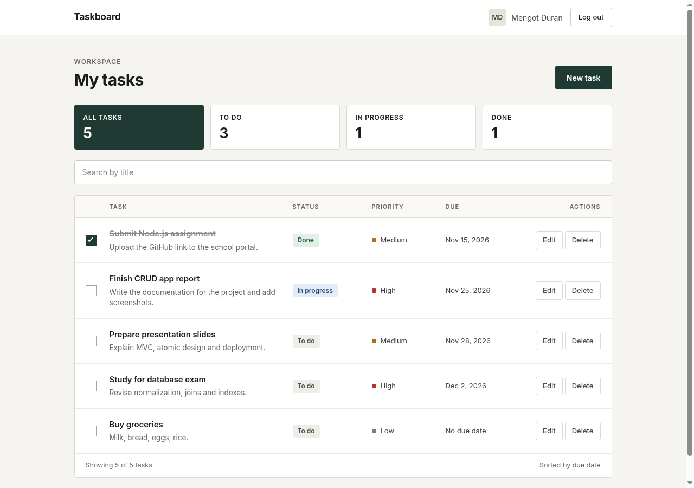
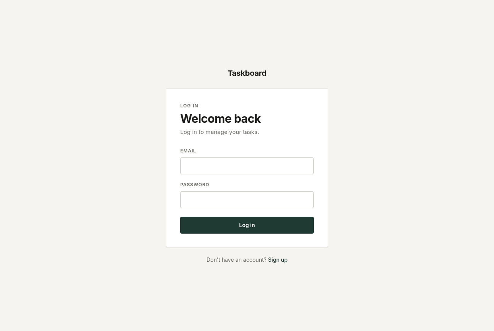
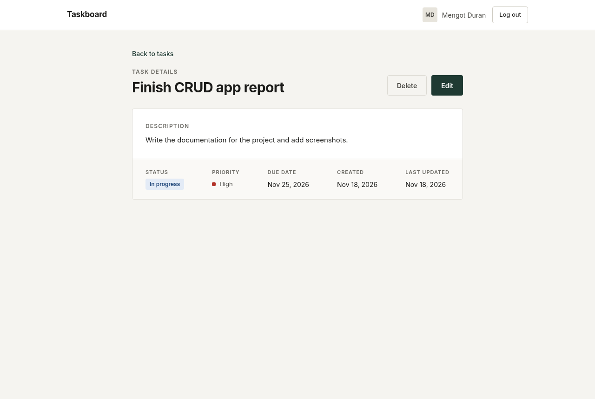
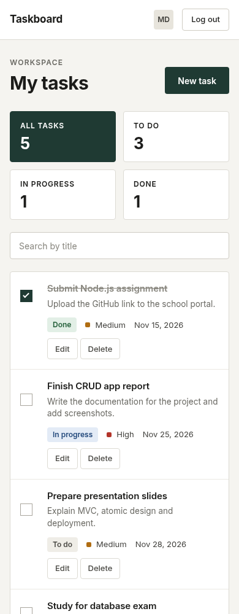

Node.js · React · PostgreSQL
A full stack CRUD app with authentication, built with an MVC backend and an atomic React frontend.
Mengot Duran
November 2026
The assignment
| Requirement | How Taskboard meets it |
|---|---|
| Node app (MVC) | Express API split into models, controllers and routes |
| Authentication | Register and log in with hashed passwords and JWT tokens |
| Simple CRUD | Create, read, update and delete tasks |
| Atomic React components | Atoms, molecules, organisms, templates and pages |
| Design and page segregation | Custom design, seven separate pages with route guards |
| PostgreSQL | Prisma ORM with migrations on Prisma Postgres |
| Deployment | Vercel (frontend), Render (backend), Prisma Postgres (database) |
Taskboard · CRUD app
Tech stack
Frontend
React
Vite for the build, React Router for pages, plain CSS with design tokens.
Backend
Node.js
Express 5 REST API, JWT for sessions, bcrypt for password hashing.
Database
PostgreSQL
Prisma ORM for queries, schema and versioned migrations.
Hosting
Cloud
Vercel, Render and Prisma Postgres, all deployed from GitHub.
JavaScript runs on both sides, so the frontend and backend share one language and one toolchain.
Taskboard · CRUD app
Architecture
Vercel
React app
Runs in the browser and stores the login token.
Render
Express API
Checks the token, validates input, runs the logic.
Inside the API
Prisma
Turns model calls into safe SQL queries.
Prisma Postgres
PostgreSQL
Stores users and tasks in Frankfurt.
The browser only ever talks to the API over HTTPS. The API is the only thing that talks to the database.
Taskboard · CRUD app
Backend
Routes
Match the URL and method to a controller.
Middleware
Check the JWT and turn errors into clean JSON.
Controllers
Validate input, check ownership, send the response.
Models
The only layer that queries the database, through Prisma.
backend/src/
routes/ authRoutes, taskRoutes
middleware/ auth, errorHandler
controllers/ auth, task
models/ userModel, taskModel
config/ env, db
app.js, server.js
backend/prisma/
schema.prisma, migrations/
Taskboard · CRUD app
Authentication
01
Register
The password is hashed with bcrypt before it is saved. Plain text is never stored.
02
Log in
The server compares the hash and returns a JWT signed with a secret, valid for 7 days.
03
Send
React keeps the token and sends it as a Bearer header with every request.
04
Protect
Middleware verifies the token. Every task query is filtered by the user’s id.
Result: you only ever see, edit or delete your own tasks, even if you guess another task’s id.
Taskboard · CRUD app
REST API
| Method | Endpoint | Login | What it does |
|---|---|---|---|
| POST | /api/auth/register | No | Create an account |
| POST | /api/auth/login | No | Log in and get a token |
| GET | /api/auth/me | Yes | The current user |
| GET | /api/tasks | Yes | List your tasks |
| POST | /api/tasks | Yes | Create a task |
| GET | /api/tasks/:id | Yes | Read one task |
| PUT | /api/tasks/:id | Yes | Update a task |
| DELETE | /api/tasks/:id | Yes | Delete a task |
Taskboard · CRUD app
Database
User
id
Int, primary key
name
String
String, unique
password
String, bcrypt hash
createdAt
DateTime
updatedAt
DateTime
1 to many
one user, many tasks
Task
id
Int, primary key
title
String
description
String, optional
status
To do, In progress, Done
priority
Low, Medium, High
dueDate
DateTime, optional
userId
links to User
createdAt, updatedAt
DateTime
Taskboard · CRUD app
Frontend
Level 1
Atoms
Button
Input, Select
Checkbox
Badge, Avatar
Heading, Text
Spinner
Level 2
Molecules
FormField
SearchField
StatCard
StatusBadge
PriorityLabel
Alert
EmptyState
Level 3
Organisms
Navbar
StatusSummary
TaskTable
TaskRow
TaskForm
Login, Register
ConfirmDialog
Level 4
Templates
AuthTemplate
AppTemplate
Level 5
Pages
Login
Register
Tasks
Task detail
Create, Edit
Not found
Each level only uses the levels before it. Pages live in their own folder and just put templates and organisms together.
Taskboard · CRUD app
Design
Colour
Page
F5F4F0
Card
FFFFFF
Text
1C1C1A
Accent
1F3A33
Border
DCDAD3
Status and priority
To do
In progress
Done
High
Medium
Low
Type and shape
Inter
Small uppercase labels
Flat bordered surfaces with a 4px corner radius
No gradients, no shadows, no icons
Colours stored once as CSS variables
Works on phones as well as desktop
Taskboard · CRUD app
The app
Count cards show each status and filter the list with one click.
Search by title, sorted by due date.
Tick the checkbox to mark a task done. It saves straight away.

Taskboard · CRUD app
The app

Log in, with a separate sign-up page

Task detail, with Edit and Delete

Phone
Taskboard · CRUD app
Deployment
Frontend
Vercel
crudapp-black.vercel.app
Builds the React app from the frontend folder and serves it worldwide.
Backend
Render
crudapp-xp2l.onrender.com
Runs the Express API. Each build also applies database migrations.
Database
Prisma Postgres
eu-central-1, Frankfurt
Managed PostgreSQL in the same region as the API.
git push
GitHub
Vercel and Render redeploy automatically
Taskboard · CRUD app
Live demo
Questions?
App
crudapp-black.vercel.app
Code
github.com/mengotduran/crudapp
API
crudapp-xp2l.onrender.com/api